Project 1
BabySense
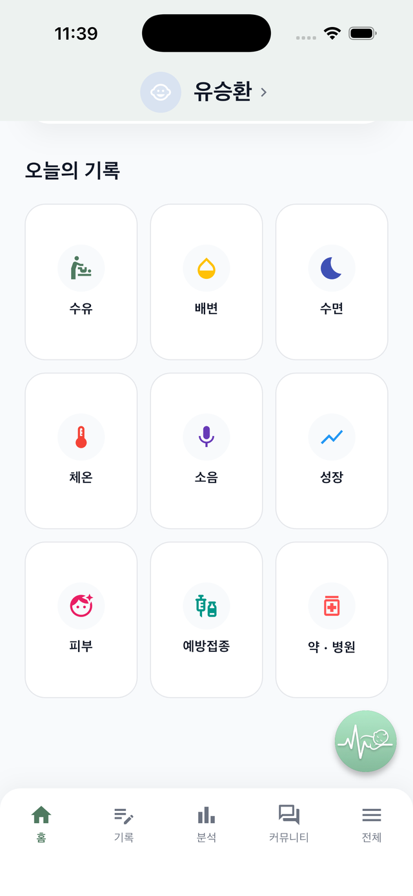
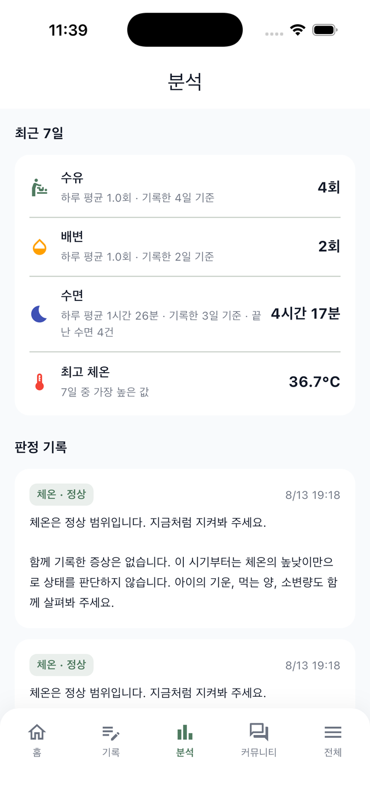
2026 졸업작품
- 기간
- 2026.05 ~ 2026.08 (5인 팀)
- 역할
- UI/UX 디자인, 화면 설계, 앱 로고 제작
- 기술
- Flutter, Supabase, AWS EC2 / Figma, Stitch AI
- 영상
- youtube.com/shorts/VAfMqwyRjoU
- 프로젝트
- 수유·수면·체온 등 아기의 하루 기록을 분석해
정상 / 주의 / 상담 권장으로 판정하고 다음 행동을 안내하는 육아 앱
- 담당 업무
-
- 회원가입, 아기 정보 입력, 메인 홈, 체온·증상 입력 화면 설계 (Figma)
- 필수 항목을 다 채워야 버튼이 켜지게 해 빈 기록을 막고, 38℃ 이상은 색으로 강조해 고열을 놓치지 않게 설계
- 앱 로고 제작 (Stitch AI 시안 → Figma 보정)
- 대체 텍스트, 색 대비, 포커스 등 웹접근성을 퍼블리셔가 챙길 기본으로 보고 화면마다 적용
- feature 브랜치 기반 GitHub 협업 / 발표 자료 일부 작성
Project 2
Feelchemy
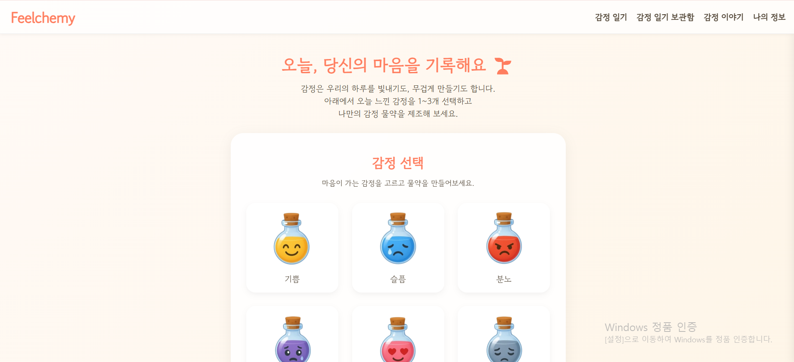
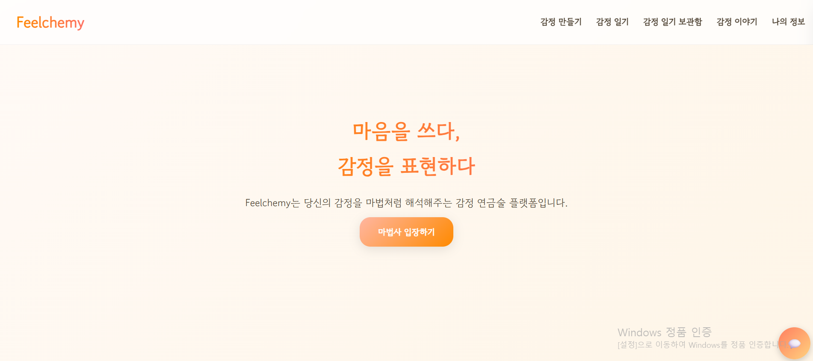
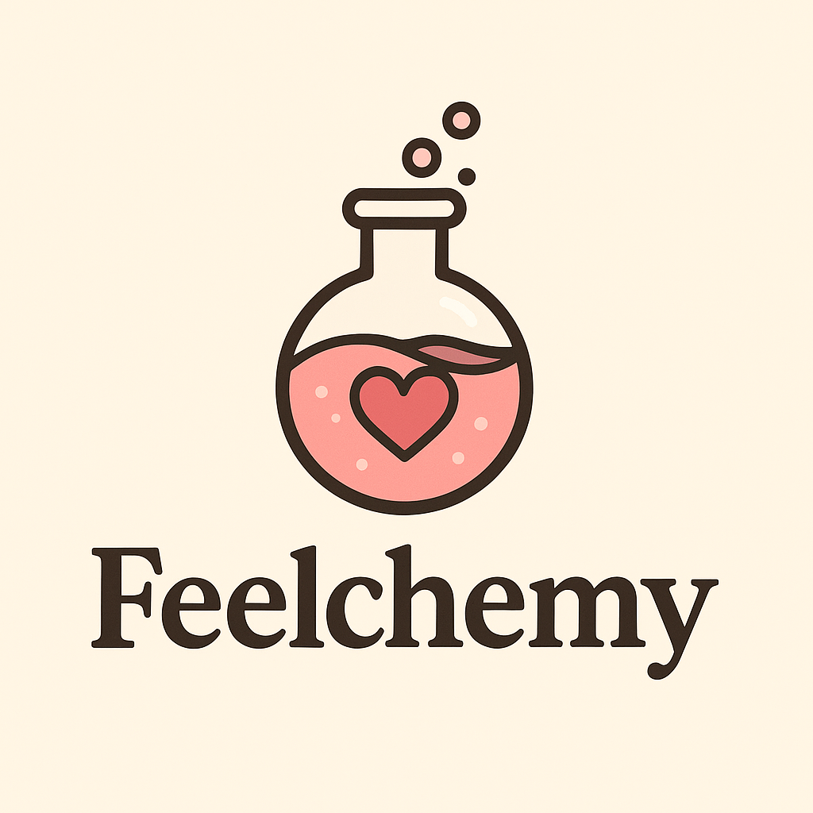
2025 졸업작품
- 기간
- 2025.05 ~ 2025.09 (5인 팀 위로하조)
- 역할
- 콘텐츠 기획, 소개 페이지 제작, 발표 PPT 제작
- 기술
- HTML, CSS, JavaScript, PHP, Firebase
- 영상
- youtu.be/CT_6l2dEqEo
- 프로젝트
- 하루 감정을 1~3개 골라 ‘물약’으로 빚고 일기로 남기는
감정 기록 · 위로 커뮤니티 반응형 웹 플랫폼
- 주요 기능
-
- 감정 물약 제조
- 감정 일기 · 달력
- 편지 · 댓글
- 타임트래블
- 1:1 채팅
- 감성 챗봇
- 담당 업무
-
- 감정 물약, 편지, 타임트래블 등 서비스 콘텐츠 기획 참여
- 기능이 많아 처음 보면 헷갈리는 서비스라, ‘감정을 물약으로 빚는다’는 컨셉이 먼저 보이게 소개 페이지 구성
- 흩어진 기능을 실제 사용 순서대로 묶어 서비스 흐름이 보이는 발표 PPT 제작
Project 3
Mind Space
시작 화면에서 연결되는 게임 · 불멍
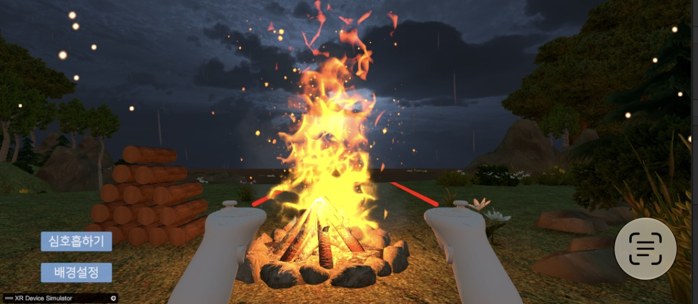
Unity 시작 화면
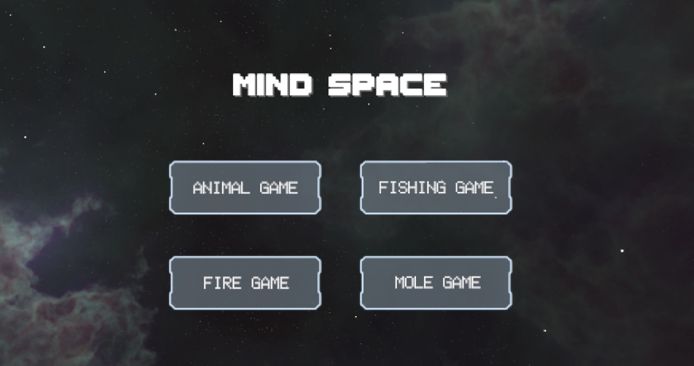
Figma 리플렛
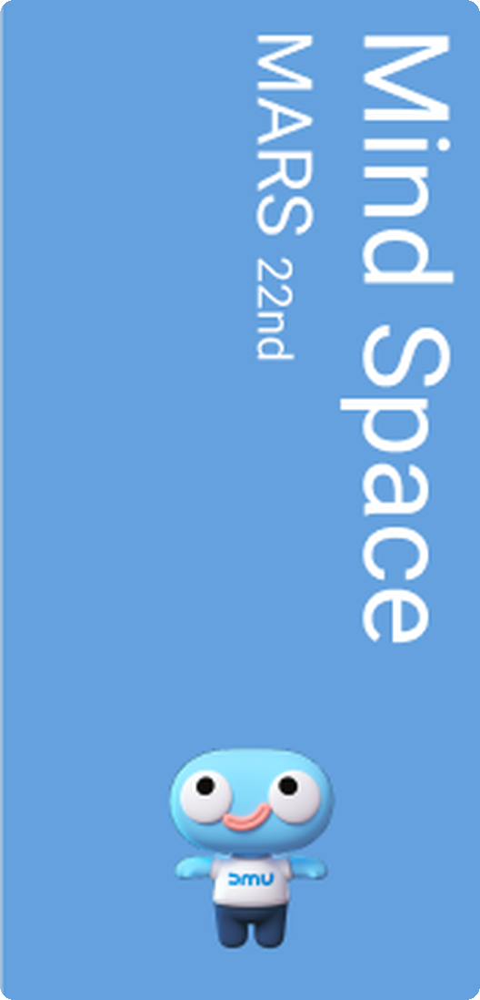
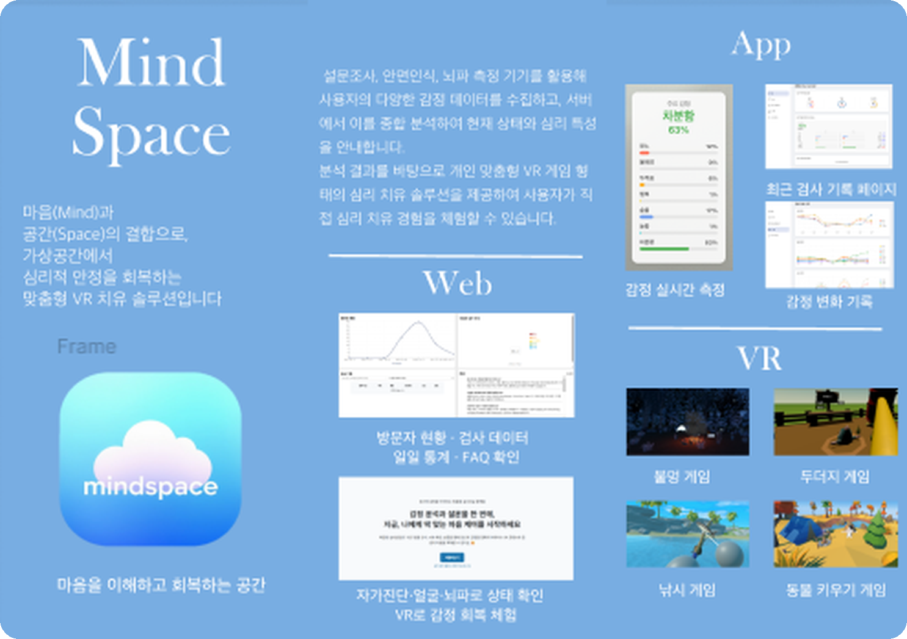
전공동아리 MARS 프로젝트 EXPO 장려상
- 기간
- 2025.06 ~ 2025.10 (VR팀) · 코엑스 전시
- 역할
- VR 시작 화면 UI, 씬 전환, 관람객 리플렛 디자인
- 기술
- Unity 2022.3 LTS, C#, XR Interaction Toolkit, URP / Figma
- 영상
- youtu.be/M-o9yZu64eE (담당 1:25 ~ 2:28)
- 프로젝트
- 설문·안면인식으로 감정 상태를 측정하고, 결과에 맞는 VR 게임으로
마음을 돌보는 앱 연동 VR 심리치료 솔루션
- 주요 기능
-
- 앱 심리 측정
- 결과 안내
- 불멍
- 낚시
- 두더지 잡기
- 동물 키우기
- 담당 업무
-
- 처음 써 본 Unity를 유튜브 강의로 익히고, 어울리는 UI 스킨을 직접 찾아 VR 시작 화면 구성
- 4종 미니게임 선택 메뉴 제작, 전시 중 게임이 안 열리는 일이 없도록 버튼마다 씬 전환을 하나씩 확인
- 코엑스 관람객용 3단 리플렛 디자인 (Figma)
Project 4
그린어스
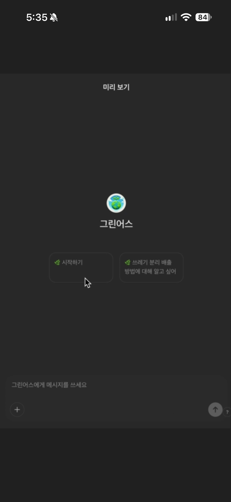
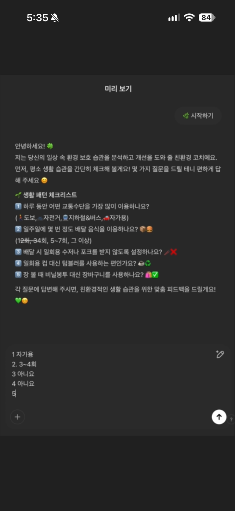
교내 생성형 AI 해커톤
- 기간
- 2025.02.19 ~ 2025.02.20 (팀 참가, 자유 주제)
- 역할
- 아이디어 기획, 대화 흐름 기획, 로고 디자인, 발표
- 기술
- ChatGPT GPTs (지시문 설계, Actions API 연동) / Canva
- 영상
- youtube.com/shorts/t2-P0qDyf7c
- 프로젝트
- 생활 습관 5가지를 체크해 항목별 피드백과 추천 미션을 주고,
할인 카페 같은 실천 정보를 외부 API로 찾아 주는 친환경 생활 코치 챗봇
- 주요 기능
-
- 생활 패턴 체크리스트
- 피드백 · 추천 미션
- API 4종 정보 검색
- 분리 배출 안내
- 담당 업무
-
- 새로운 주제가 쉽게 떠오르지 않아 팀과 아이디어 15개를 일단 다 꺼낸 뒤, 심사 기준(창의성·실용성·AI 활용)으로 걸러 주제 선정
- 체크리스트 → 피드백 → 추천 미션으로 이어지는 대화 흐름 기획
- Canva로 챗봇 ‘그린어스’ 로고 제작
Activity
신입생 HTML/CSS 멘토링
2024.05.27 수업 · 칠판 설명
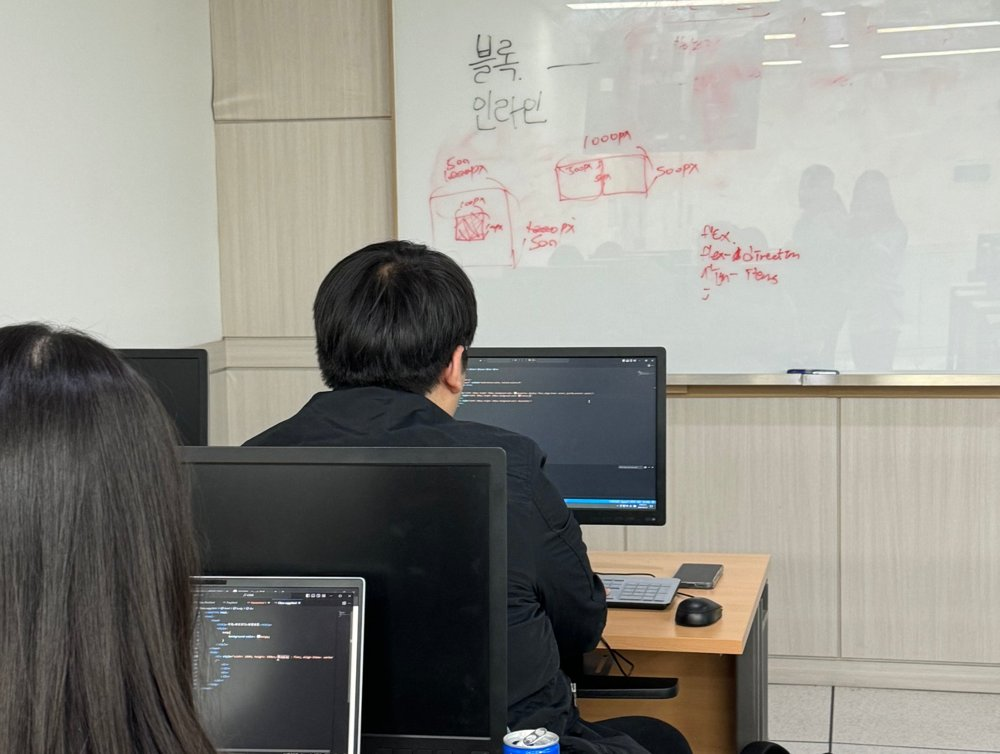
수업 정리 자료
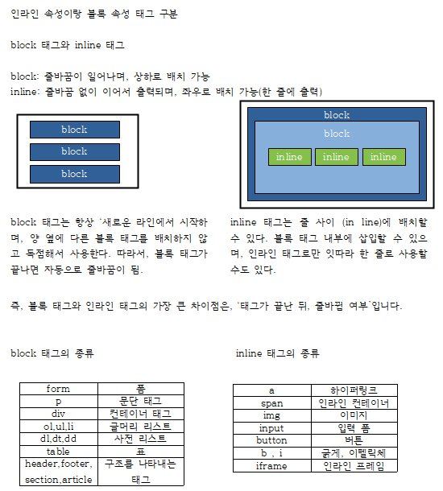
전공동아리 MARS · 신입생 대상 수업
- 시기
- 2024.05.13 ~ 2024.06.10 (2학년) · 매주 월요일
- 역할
- HTML/CSS 멘토 (동료 부원 1명과 공동)
- 대상
- 동아리 1학년 신입생
- 수업 주제
-
- div 구조 · 태그
- block / inline
- inline-block
- Flexbox 정렬
- position · z-index
- 내가 한 일
-
- 준비하며 내가 설명하지 못하는 개념이 있다는 걸 알고, 선배에게 다시 배운 뒤 조언을 받아 수업 순서를 새로 짬
- 칠판에 박스를 그려 가며 block / inline, flex 개념 설명
- 설명 직후 따라 해 보는 실습 문제 출제 (부모 div 안 가운데 정렬, 1000px을 500px 두 칸으로 나누기)
- 실습 시간에는 자리를 돌며 막힌 신입생의 코드를 같이 보고 해결
- 수업 내용을 문서로 정리해 단톡방에 공유하고, 다음 수업(position, z-index 실습) 미리 안내
- 결과
- 마지막 시간에 대부분의 신입생이 간단한 페이지를 직접 완성